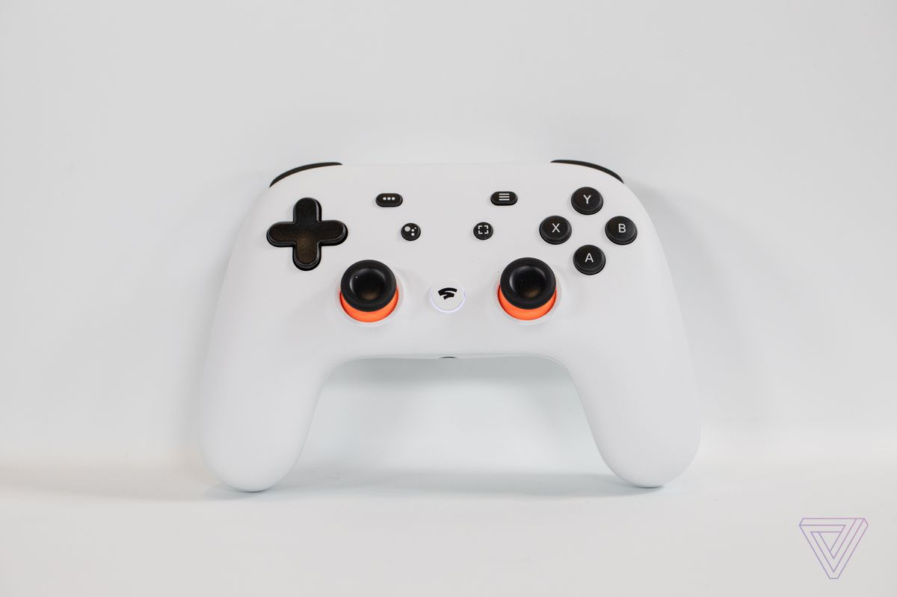
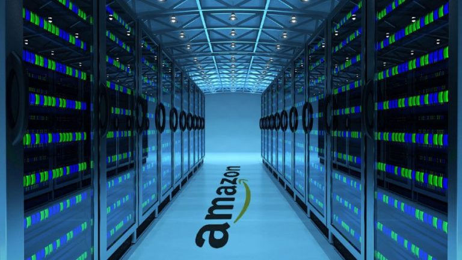

แม้ Google จะไปได้ไม่สวยกับการเปิดให้บริการเล่นเกมแบบ Streaming อย่าง Google Stadia ที่เต็มไปด้วยปัญหาและยอดสั่งซื้อที่ไม่เป็นไปตามเป้าที่วางไว้ แต่ดูเหมือนว่าผู้ให้บริการเกี่ยวกับเทคโนโลยีเจ้าอื่น ๆ นั้นจะไม่หวั่นในเรื่องนี้นัก และยักษ์ใหญ่อย่าง Amazon เองก็เตรียมที่จะกระโดดเข้ามาสู่วงการนี้เพื่อเผชิญหน้ากับคู่แข่งโดยตรงแล้ว
รายงานจากเว็บไซต์ CNET ระบุว่า แหล่งข่าวที่รู้เรื่องวงในของทาง Amazon ระบุว่า ภายในบริษัทมีการว่าจ้างอดีตพนักงานของ Microsoft เพื่อเข้าร่วมการพัฒนาโปรเจกต์ใหม่ที่ทำงานร่วมกับทีม Web Service โดยตรง
ข้อมูลที่ได้มายังมีการระบุอีกว่า ทาง Amazon จะเริ่มให้บริการด้าน Streaming Service และจะเปิดตัวอย่างเป็นทางการในปี 2020 โดยก่อตั้งเป็นบริษัทใหม่ให้จัดการดูแลโดยเฉพาะเหมือนกัน Twitch ซึ่งเดิมทีจะมีการเปิดตัวที่เร็วกว่านี้ แต่จากกระแสตอบรับที่ไม่ดีนักของ Stadia ในวันเปิดตัว ทำให้พวกเขาตัดสินใจเลื่อนการสั่งจองออกไป และเพิ่มการให้บริการอื่น ๆ อีกเพื่อซื้อใจผู้บริโภค
ซึ่งถ้าหากมีการเปิดตัวจริง ก็เรียกว่าได้ว่า Microsoft ที่เปิดให้บริการ xCloud ในแบบ Beta และ Google Stadia จะต้องพบเจอกับคู่แข่งที่น่ากลัวในอนาคตแน่นอน เพียงแต่ว่าในเวลานี้เทคโนโลยี Game Streaming อาจจะยังใหม่และเร็วเกินไปสำหรับเวลานี้ ก็ต้องมาดูกันว่าถ้าหาก Amazon กระโดดเข้ามาสู่วงการนี้จริงจะเป็นอย่างไรต่อไปครับ